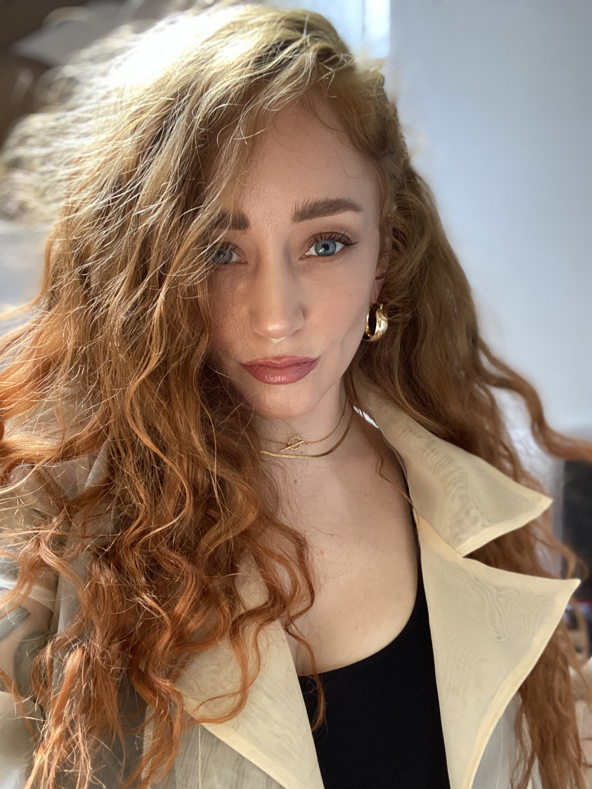

Know me.
My Story:
A self-taught Graphic Designer. Before corona hit, I was self-employed and
working as
a
chef
in a vegan restaurant, whilst following autodidact study of programming in HTML/CSS/JS.
I aim to progress to full-stack development so that I can offer digital architecture from the
ground
up
and be location independent again. The dream would be to split my workload between
sustainable/eco
corporate work with a human-focused approach and building for NGO's or grass-roots ventures
alongside.
My ultimate goal is to be able to travel to anywhere in the world and offer my help or teachings
to
people in need. I want to use my privileged position to learn as much as possible and help make
a
positive change
in the world.